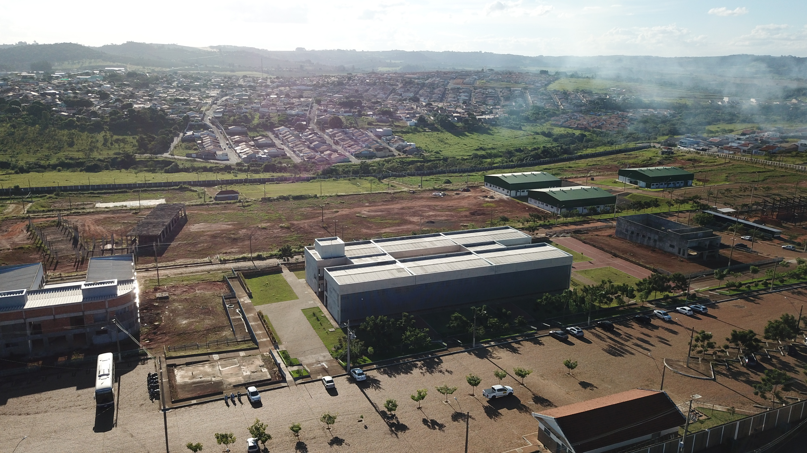
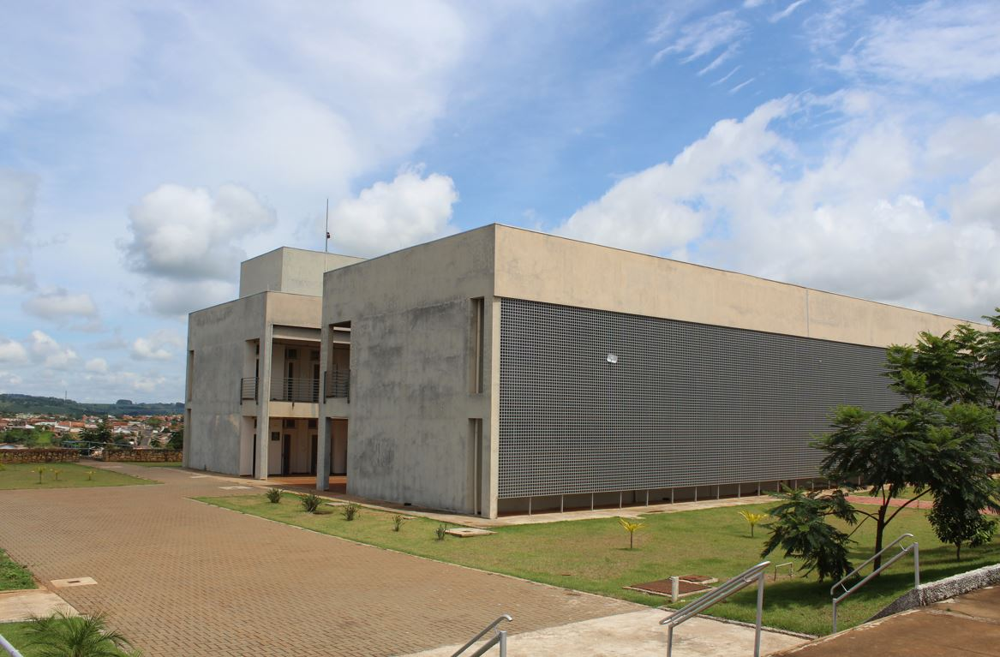
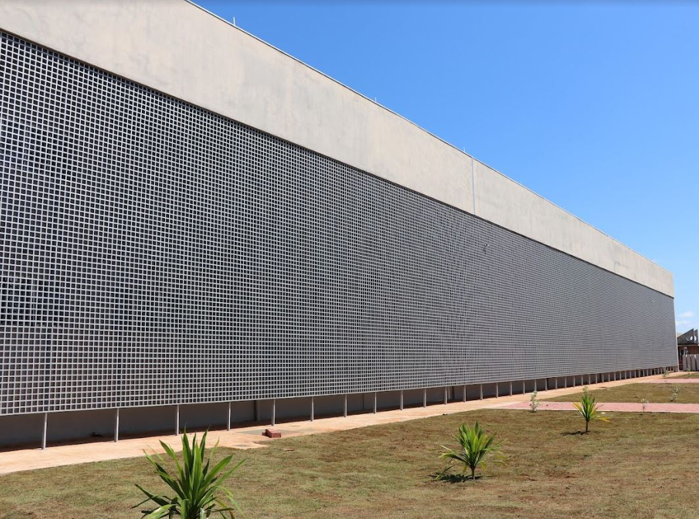

PROFESSOR · PESQUISADOR
Cássius Henrique
Xavier Oliveira.
Professor e pesquisador do Instituto de Ciência, Tecnologia e Inovação da Universidade Federal de Lavras, com atuação em Estatística, Análise de Sobrevivência e Confiabilidade.
UFLA · ICTIN
Câmpus São Sebastião do Paraíso
01 · SOBRE
Estatística aplicada a problemas reais de ciência, engenharia e tecnologia.
Sou professor e pesquisador do Instituto de Ciência, Tecnologia e Inovação (ICTIN/UFLA) , no Câmpus Paraíso, e atuo no Bacharelado Interdisciplinar em Inovação, Ciência e Tecnologia.
Sou doutor em Estatística pela UFMG, mestre em Engenharia de Produção pela UFMG e engenheiro de produção pela UFOP. Minha formação conecta modelagem estatística, confiabilidade e métodos quantitativos aplicados à tomada de decisão.
02 · PESQUISA
INVESTIGAÇÃO
Modelagem estatística para fenômenos complexos.
Minhas pesquisas atuais concentram-se no desenvolvimento e aplicação de métodos estatísticos para dados de tempo até evento, confiabilidade e processos estocásticos, com interesse em modelos flexíveis e inferência.
Análise de Sobrevivência
Modelos para tempos até evento, taxas de falhas não proporcionais, fragilidade e estruturas de dependência.
Confiabilidade
Modelagem de dados de vida, manutenção, reparo imperfeito e análise quantitativa de sistemas.
Estatística Aplicada
Inferência, regressão, experimentação, análise de dados e métodos computacionais para problemas de engenharia.
Processos Estocásticos
Modelos probabilísticos para fenômenos aleatórios e sistemas observados ao longo do tempo.
TESE DE DOUTORADO · UFMG
Acessar tese de doutorado ↗
A class of semiparametric joint frailty-copula models for recurrent events subjected to a terminal event
Pesquisa desenvolvida no Doutorado em Estatística da Universidade Federal de Minas Gerais, concluído em 2024.
DISSERTAÇÃO DE MESTRADO · UFMG
Acessar dissertação de mestrado ↗
Dissertação de Mestrado em Engenharia de Produção
Pesquisa desenvolvida no Mestrado em Engenharia de Produção da Universidade Federal de Minas Gerais, concluído em 2016, com atuação em modelagem estocástica e confiabilidade.
03 · ENSINO
FORMAÇÃO
Ensino orientado por raciocínio, modelagem e aplicação.
Atuo na formação quantitativa de estudantes de graduação, articulando fundamentos matemáticos e estatísticos, interpretação de dados, ferramentas computacionais e problemas aplicados.
UFLA · ATUAL
EXPERIÊNCIA
PÓS-GRADUAÇÃO
Estatística: Conceitos e Experimentações
Bacharelado Interdisciplinar em Inovação, Ciência e Tecnologia.
UFLA · ATUALBases Matemáticas para Ciência e Tecnologia B
Fundamentos matemáticos para a formação interdisciplinar em ciência e tecnologia.
Estatística e Probabilidade
Experiência docente em cursos de Administração, Ciências Contábeis, Engenharias, Sistemas de Informação, Nutrição e Gestão Pública.
Confiabilidade e Dados de Vida
Experiência em Probabilidade e Estatística para Confiabilidade e Análise de Dados de Vida.
04 · ENTIDADE DE EXTENSÃO
GRUPO DE ESTUDOS · UFLA
INTEGRA: Grupo de Estudos em Bases Matemáticas B.
O INTEGRA é um espaço de aprendizagem colaborativa voltado ao aprofundamento dos conhecimentos em Bases Matemáticas para Ciência e Tecnologia B . Suas atividades incluem encontros de estudo, resolução de exercícios, revisão de conceitos e discussão de aplicações matemáticas.
Objetivos: fortalecer a aprendizagem em Matemática, desenvolver o raciocínio lógico e a autonomia dos estudantes, incentivar a troca de conhecimentos e contribuir para a formação acadêmica em ciência, tecnologia e engenharia.
Público-alvo: estudantes da Universidade Federal de Lavras interessados em aprofundar seus conhecimentos matemáticos, inclusive aqueles que não estejam atualmente matriculados na disciplina de Bases Matemáticas B.
∭
INTEGRA · UFLA
Estude, compartilhe e aprofunde seus conhecimentos.
No site oficial do INTEGRA, você encontra o formulário de inscrição, as datas e os horários dos encontros, os avisos e comunicados, além do link de acesso ao grupo de WhatsApp.
Acessar site do INTEGRA ↗
05 · EXTENSÃO
UNIVERSIDADE & COMUNIDADE
Conhecimento que ultrapassa os limites da sala de aula.
Projetos de extensão aproximam universidade e sociedade por meio de formação, troca de conhecimento e aplicação prática.
∑
PROJETO DE EXTENSÃO · UFLA
Clube de Exatas: Matemática para o ENEM
Preparação gratuita em Matemática para o ENEM, conectando universidade, estudantes e comunidade de São Sebastião do Paraíso e região.
Conhecer o projeto ↗
Experiência anterior
Gestão da Iluminação Pública de João Monlevade
Projeto de extensão voltado à estruturação quantitativa do processo decisório entre internalização e terceirização do serviço de iluminação pública.
06 · TRAJETÓRIA
FORMAÇÃO & DOCÊNCIA
Uma trajetória entre Engenharia e Estatística.
Universidade Federal de Lavras
Professor Assistente · ICTIN · Câmpus Paraíso.
Universidade Católica de Petrópolis
Professor em pós-graduação na área de Engenharia de Confiabilidade.
Doutorado em Estatística · UFMG
Pesquisa com foco em Análise de Sobrevivência.
Universidade Federal de Minas Gerais
Professor substituto.
Mestrado em Engenharia de Produção · UFMG
Modelagem estocástica e confiabilidade.
Engenharia de Produção · UFOP
Formação em Engenharia de Produção.
07 · ENDEREÇO PROFISSIONAL
UFLA · CÂMPUS PARAÍSO
Atuo no Instituto de Ciência, Tecnologia e Inovação (ICTIN), localizado no Câmpus Paraíso da Universidade Federal de Lavras, em São Sebastião do Paraíso, Minas Gerais.
Endereço
Rua Antônio Carlos Pinheiro Alcântara, nº 855
Jardim Mediterranée
São Sebastião do Paraíso – MG
CEP 37950-000
Localização no câmpus
Sala 1 dos Docentes
Bloco de Salas dos Docentes



CONTATO & PERFIS
Pesquisa, ensino e extensão.
Para informações institucionais, produção acadêmica e trajetória profissional, consulte meu e-mail, meus perfis acadêmicos e a página do ICTIN.